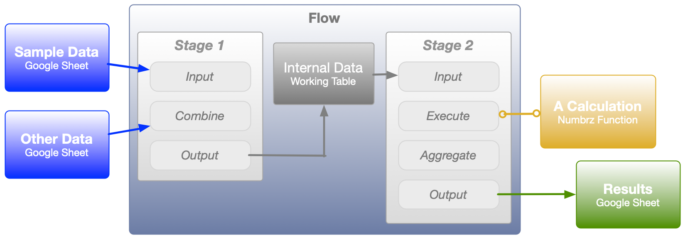

Numbrz Models
A Model is a collection of components that perform an analysis according to a user-definable configuration. This analysis can ingest one or more sets of input records from a data source and, depending upon configuration, produce one or more sets of output records written to a target of the users choosing. Each component of a model has a particular function and these components can be re-used in different arrangements to produce the desired results. The broad categories of these are reviewed below.
Functions
Functions are re-usable components that accept one or more input values and produce one or more output values. A Numbrz function is similar in use to a spreadsheet formula. Functions allow for various mathematical and date operations, as well as lookups and even logical decision making. Numbrz functions are both easier to understand and more flexible than spreadsheet formulas.
Flows
Flows operate on sets of data, processing each record through a configurable sequence of Stages. Flow stages allow for each record to be handled in turn by a number of calculations and transformations, including executing Functions. Flows are not bound to specific data stored in any particular data source, but rather specify the general structure of the data they require as input and emit as output. This means that flows can be re-used in various configurations with any data sources that meet these specifications.
Jobs
A job's configuration describes how to fulfill the input data-sources and output data-targets specified by a Flow from the Data the user has connected to the Numbrz application. The job is also the executable unit of a Numbrz Model: running a job starts the analysis. Status information is provided as the job runs.
When a Job is run, the relationships between model components look like this:
This is a very simple view of a generic job. By adding flow stages and functions, and ingesting more data sources, very sophisticated analyses can be built. Don't worry if this does not make much sense yet. Once you work with each component in detail and run a few jobs, the workings of a model will become much clearer.
See also: Create a Model, Configure a Model, About Data